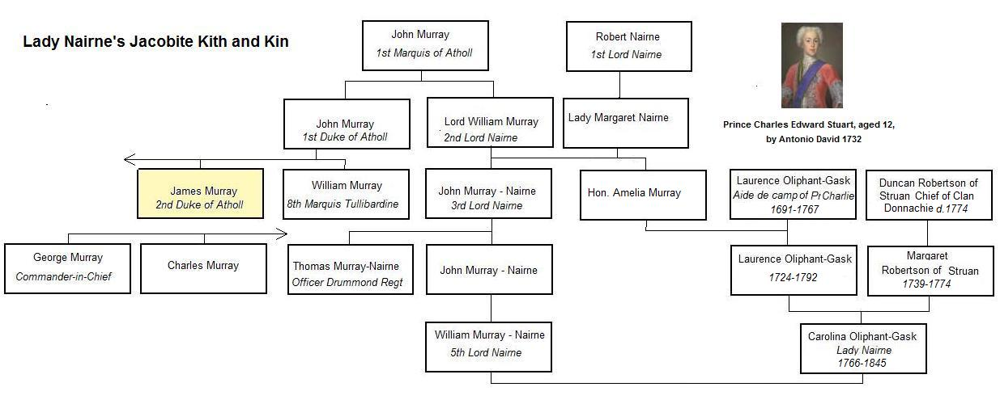

Will Ye No' Come Back Again?
Ne reviendra-t-il jamais?
Text by Lady Nairne
Tune -Mélodie (Scottish Air)"Will Ye No Come Back Again"
By Neil Gow Junior (maybe after "Mo Ghile Mear")
Sequenced by Christian Souchon
Alternative Tune : "The Man on the Moon"
as stated in Hogg's "Jacobite Relics" 2nd Series page 195 (song N°101)
last but, by no means least, a Pipe version
by the Drambuie Kirkliston Pipe Band -Excerpt from demo music clip

|
To the lyrics:
Hogg's Mistake. Hogg writes in a note to this song: "This old song was never published till of late years. I had it in manuscript ; but a copy, scarcely so perfect, is to be found in a late Paisley publication." The reason why he did not know that the author of this new poem was Lady Nairne was as follows: Carolina Oliphant was born in a staunch Jacobite family (cf. picture). "She was baptized Carolina in honour of the then exiled Prince Charles Stuart. Her parents were cousins and grandchildren of William Murray, the Lord Nairne who narrowly escaped execution after the 1715 rising, and were married at Versailles on 9 June 1755 during nineteen years of political exile following the failure of the Jacobite rising of 1745. Her mother was also descended from a famous Jacobite Clan, the Robertsons of Struan. Robertsons, Oliphants and Nairnes alike had been been attainted for high treason and lost their estates. A part of their Gask domain was bought back from the government and her parents were able to return two years before Carolina's birth. Her father Laurence Oliphant was active in Jacobite politics throughout his life and his children were carefully reared to ‘keep them loyal’. The prim and pietistic Lady Nairne But then an evangelical revival was steadily making its way among the Scottish gentry that transformed the blithe and musical Carolina Oliphant into the prim and pietistic Lady Nairne. Performance of much of the traditional Scots repertoire was becoming problematic in polite society because of its explicitly sexual content and the decline in the social segregation of men and women. One of the earliest pieces composed by Carolina was a bowdlerized version of Burns's ‘Pleughman’ for her brother to sing to his tenants at their annual dinner. Many of her songs were set to classic traditional tunes in this way. Sometimes only the tune was used and new lyrics were written for it; sometimes the verbal text was a creative collage of existing versions. Contemporary song-making was often a collective process, making individual attribution difficult. Anonymity and feminity Since anonymity also was the rule (strengthened in Carolina's case by the urge to be taken seriously, which she felt might be compromised if her songs were known to be by a woman), the exact extent of her work and its links with the rest of the tradition have never been clearly established. There is no reliable critical edition. Jacobite songs probably make up the largest thematic group in Lady Nairne's work. The genre had emerged during the later seventeenth century, and by 1820 it was second in importance only to love song in the traditional canon, attracting the attention of major songwriters such as Robert Burns and James Hogg, and acting as a symbolic code for continuing Scottish opposition to the Union. Carolina's extensive knowledge of Scottish music and song led to contact with the publisher Robert Purdie who was planning ‘a collection of the national airs, with words suited for refined circles’, which later appeared as The Scotish Minstrel (six vols., 1821–4) edited by Robert A. Smith (1780–1829), precentor of St George's, and the leading church musician in Scotland. Since such work was considered incompatible with her status as a gentlewoman, elaborate steps were taken to conceal her identity . Contributions were sent through intermediaries, either anonymously or as coming from the fictitious Mrs Bogan of Bogan . When obliged to visit her publisher she did so in disguise. Only in the posthumous volume, Lays from Strathearn (1846), were they eventually avowed." Excerpts from an essay by William Donaldson in "New Oxford Dictionary of National Biography" Scotland's Sleeping Hero My French translation of the fourth line of the chorus ("Of course, you'll come back again") is purposefully inaccurate: Lady Nairne does not go so far as to write such a politically incorrect sentence, even to please her Jacobite relatives. She cautiously prefers the stubborn but non-committal litany "Will you no come back again?" that suggests this meaning. Written over thirty years after the Prince's death, the poem addresses him as a legendary sleeping hero like King Arthur (Brittany), Bran the Blessed (Wales) or Frederick Barbarossa (Germany), those "good kings" who shall some day come back again and restore their native countries to their ancient greatness. |
A propos du texte:
L'erreur de Hogg Hogg écrit dans une note annexée à ce chant: "Cette ancienne chanson n'a jamais été publiée jusqu'à ces dernières années. J'en avais une copie manuscrite, mais une version presque aussi bonne a été publiée récemment par Paisley". Que Hogg n'ait pas su que le poème était récent et que Lady Nairne en était l'auteur s'explique ainsi: Caroline Oliphant était née dans une famille foncièrement Jacobite (cf. illustration). "On l'avait prénommée Caroline en l'honneur du Prince Charles, alors exilé. Ses parents étaient cousins et tous deux petits enfants de William Murray, un Lord Lairne qui avait failli être exécuté après le soulèvement de 1715. Ils s'étaient mariés à Versailles le 9 juin 1755 au cours d'un exil politique de 19 ans consécutif au soulèvement de 1745. Sa mère descendait aussi d'un clan Jacobite fameux, les Robertson de Struan. Tant les Robertson que les Oliphant et les Nairne avaient été déchus de leurs droits pour haute trahison et leurs terres avaient été confisquées. Une partie du domaine de Gask avait pu être racheté à l'état et ses parents rentrèrent en Ecosse deux ans avant la naissance de Caroline. Son père Laurence Oliphant fut toute sa vie un Jacobite actif et ses enfants soigneusement élevés dans la loyauté à la cause. La prude et pieuse Lady Nairne Mais le renouveau du protestantisme au sein de la noblesse écossaise transforma l'allègre et mélomane Caroline Oliphant en la pieuse et convenable Lady Nairne. Il était devenu difficile de produire le répertoire traditionnel écossais en raison de son contenu grivois, devant une assistance bien élevée où les messieurs et les dames étaient de plus en plus mélangés. L'un des premiers morceaux composés par Caroline fut une version expurgée du "Laboureur" de Burns, destinée à être chantée par son frère lors du dîner annuel offert aux métayers. Nombreux sont les poèmes qu'elle composa sur des airs connus selon ce procédé. Parfois elle ne réutilisait que la mélodie et créait un texte nouveau. Parfois le nouveau texte était un "collage créatif" à partir de versions existantes. Il s'agissait d'ailleurs souvent d'un processus collectif rendant impossible l'attribution à tel ou tel auteur. Anonymat et féminité: L'anonymat était de règle, renforcé dans le cas de Caroline par la nécessité, pour que ces vers soient pris au sérieux, de cacher que l'auteur en était une femme. Si bien que l'étendue exacte de sa création et ses liens avec le reste de la tradition n'ont jamais pu être clairement établis et qu'il n'existe pas d'édition critique fiable des ses oeuvres. Les chants Jacobites en constituent certainement le groupe thématique le plus important. Le genre s'était graduellement constitué à la fin du 17ème siècle, venant juste après les chansons sentimentales traditionnelles. Il attirait des compositeurs de premier rang comme Robert Burns et James Hogg et servait de symbole à l'opposition écossaise à l'Union. Les connaissances étendues de Caroline en matière de musique et de chants écossais amenèrent l'éditeur Robert Purdie à la rencontrer alors qu'il projetait "un recueil d'airs nationaux assortis de paroles convenables". Ce recueil parut un peu plus tard sous le titre de Ménestrel écossais (6 vols. 1821-4) édité par Robert A. Smith (1780-1829), chantre de la cathédrale St Georges, et premier spécialiste écossais de la musique sacrée. Ce genre de littérature étant incompatible avec son statut d'aristocrate, des dispositions compliquées furent prises pour cacher son identité . Ses textes étaient transmis par des intermédiaires, soit non signés , soit sous le pseudonyme de Mrs Bogan of Bogan . Si jamais il lui fallait rendre visite à son éditeur, elle le faisait déguisée. Seul un ouvrage posthume, les Lais de Strathearn (1846), porte son nom." Extraits d'un article de William Donaldson pour le "New Oxford Dictionary of National Biography" Le "héros dormant" de l'Ecosse. C'est à dessein que j'ai traduit la 4ème ligne du refrain par "Oui, bien sûr, tu reviendras". Lady Nairne ne va pas si loin et son souci de plaire à sa parenté Jacobite ne la conduit pas à écrire cette phrase politiquement incorrecte. Elle préfère réitérer la litanie "Ne reviendras-tu jamais?" qui n'engage à rien, tout en suggérant la même réponse. Rédigé plus de trente ans après la mort du Prince (1788), le poème s'adresse à lui comme à un héros dormant légendaire, dont le roi Arthur (Bretagne), Bran le Béni (Galles) ou Frédéric Barberousse (Allemagne) sont d'autres exemples. Ces "bons rois" reviendront restaurer la grandeur passée de leurs patries respectives. |

|
WILL YE NO COME BACK AGAIN?
1. Bonnie [Royal] Charlie's noo [now] awa Safely o'er [owre] the friendly main Mony a heart will break in twa Should he ne'er come back again.
Chorus
[a. Mony a traitor 'mang the isles
3. English bribes were a' in vain
4. We watch'd thee in the gloamin' hour
5. Sweet's the laverock's note an lang,
|
Ewan McColl & his wife Peggy Seeger sing "Will ye no" Stanzas 1, 2, 3, 4, 5 are taken from a 1869 collection and seem to be Lady Nairne's own |
NE REVIENDRA-T-IL JAMAIS?
1. Charlie vient de nous quitter, Un vaisseau l'a emporté. Plus d'un cœur serait brisé S'il ne revenait jamais.
Refrain
[a. Car ceux qui brisèrent les liens
3. L'Anglais s'évertuait à corrompre
4. Veillant sur toi depuis l'aurore,
5. Et l'alouette, en modulant
|